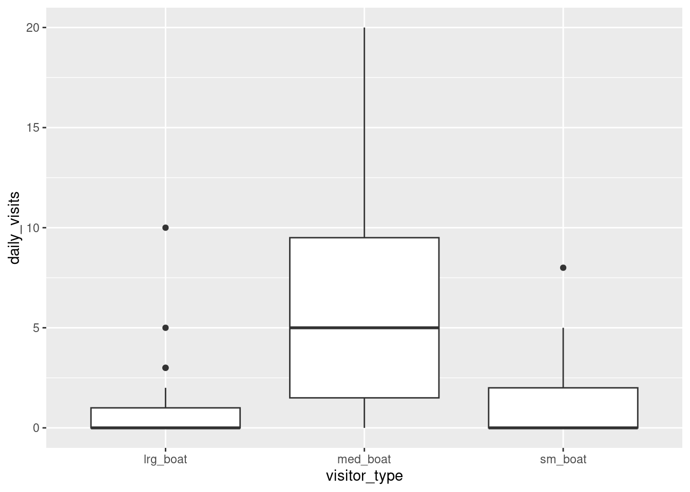
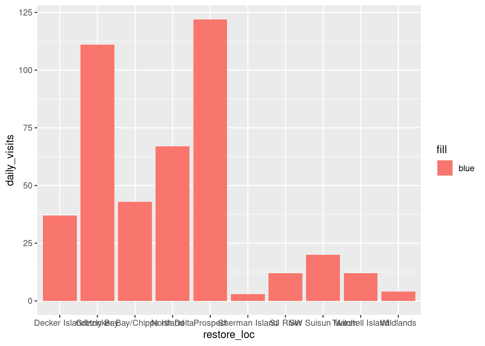
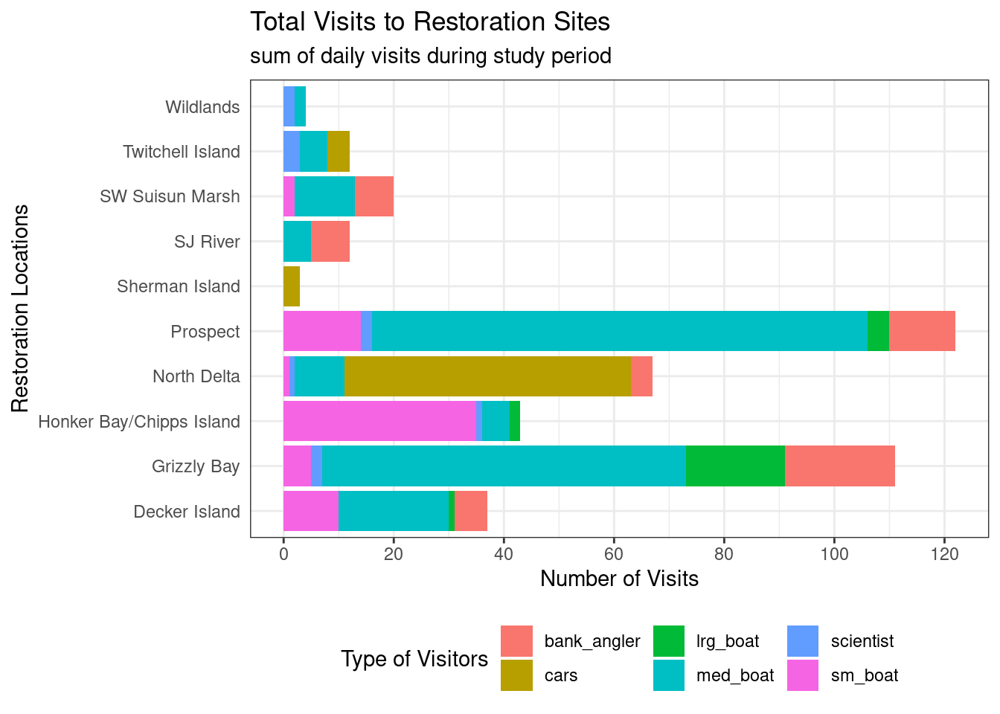
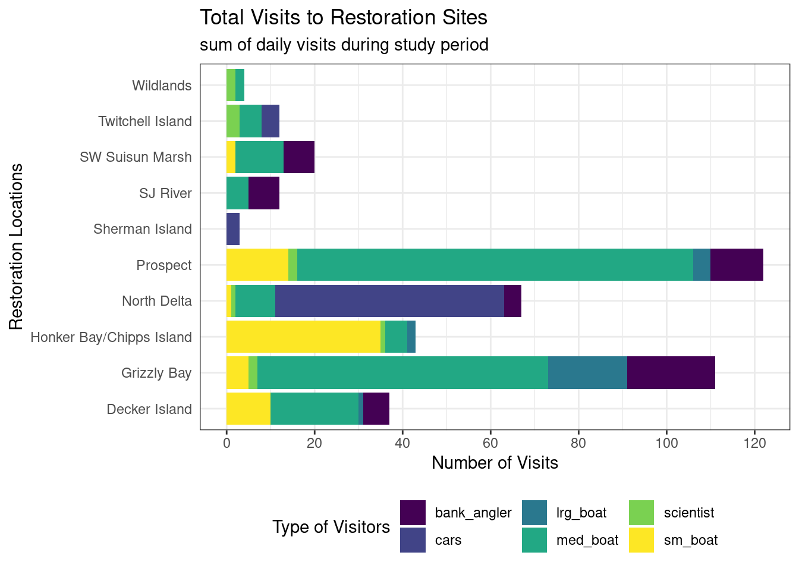
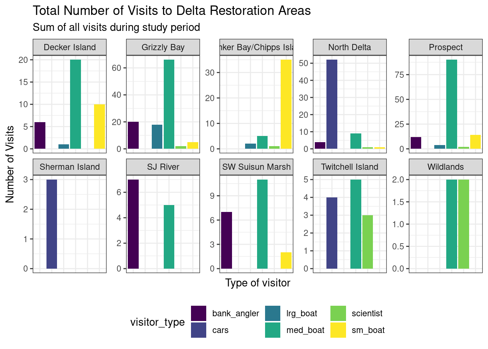

Data Visualization
Setup
Read Data
delta_visits_raw <- read_csv("https://portal.edirepository.org/nis/dataviewer?packageid=edi.587.1&entityid=cda8c1384af0089b506d51ad8507641f")Rows: 55 Columns: 13
── Column specification ────────────────────────────────────────────────────────
Delimiter: ","
chr (4): EcoRestore_approximate_location, Reach, Time_of_Day, notes
dbl (8): Latitude, Longitude, sm_boat, med_boat, lrg_boat, bank_angler, sci...
date (1): Date
ℹ Use `spec()` to retrieve the full column specification for this data.
ℹ Specify the column types or set `show_col_types = FALSE` to quiet this message.Explore Data
colnames(delta_visits_raw) [1] "EcoRestore_approximate_location" "Reach"
[3] "Latitude" "Longitude"
[5] "Date" "Time_of_Day"
[7] "sm_boat" "med_boat"
[9] "lrg_boat" "bank_angler"
[11] "scientist" "cars"
[13] "notes" janitor::clean_names() is an awesome function to transform all column names into the same format. The default format for this function is snake_case_format. We highly recommend having clear well formatted column names. It makes your life easier down the line.
delta_visits <- delta_visits_raw %>%
janitor::clean_names()
colnames(delta_visits) [1] "eco_restore_approximate_location" "reach"
[3] "latitude" "longitude"
[5] "date" "time_of_day"
[7] "sm_boat" "med_boat"
[9] "lrg_boat" "bank_angler"
[11] "scientist" "cars"
[13] "notes" glimpse(delta_visits)Rows: 55
Columns: 13
$ eco_restore_approximate_location <chr> "Decker Island", "Decker Island", "De…
$ reach <chr> "Brannan to Decker Island", "Decker I…
$ latitude <dbl> 38.10587, 38.10587, 38.08456, 38.0845…
$ longitude <dbl> -121.7064, -121.7064, -121.7204, -121…
$ date <date> 2017-07-07, 2017-07-07, 2017-07-07, …
$ time_of_day <chr> "unknown", "unknown", "unknown", "unk…
$ sm_boat <dbl> 0, 0, 0, 0, 2, 0, 0, 7, 1, 0, 0, 0, 0…
$ med_boat <dbl> 2, 4, 0, 1, 10, 0, 0, 1, 2, 0, 1, 6, …
$ lrg_boat <dbl> 0, 0, 0, 0, 1, 0, 0, 0, 0, 0, 0, 0, 0…
$ bank_angler <dbl> 1, 3, 0, 0, 0, 0, 0, 0, 2, 0, 0, 5, 0…
$ scientist <dbl> 0, 0, 0, 0, 0, 0, 0, 0, 0, 0, 0, 0, 0…
$ cars <dbl> 0, 0, 0, 0, 0, 0, 0, 0, 0, 0, 0, 0, 0…
$ notes <chr> "no notes", "no notes", "Nobody or tr…range(delta_visits$date)[1] "2017-07-07" "2018-03-13"Looking at data using view() function - see it is now tidy! Make it tidy below (i.e., cleaning and organizing data):
visit_long <- delta_visits %>%
pivot_longer(cols = c("sm_boat", "med_boat", "lrg_boat", "bank_angler", "scientist", "cars"), # selecting visitor types
names_to = "visitor_type", # renaming new column as such and below adding new column to hold all of these data points/values
values_to = "quantity") %>%
rename(restore_loc = eco_restore_approximate_location) %>%
select(-notes)Calculating Daily Visits by Location
daily_visits_loc <- visit_long %>%
group_by(restore_loc, date, visitor_type) %>%
summarize(daily_visits = sum(quantity))`summarise()` has grouped output by 'restore_loc', 'date'. You can override
using the `.groups` argument.Plotting Daily Visits by Location with ggplot2:: package
## Option 1 - data and mapping called in the ggplot() function
ggplot(data = daily_visits_loc,
aes(x = restore_loc, y = daily_visits))+
geom_col()
# ## Option 2 - data called in ggplot function; mapping called in geom
# ggplot(data = daily_visits_loc) +
# geom_col(aes(x = restore_loc, y = daily_visits))
#
#
# ## Option 3 - data and mapping called in geom
# ggplot() +
# geom_col(data = daily_visits_loc,
# aes(x = restore_loc, y = daily_visits))
#
# ## each of these ways lead us to the same result!Choosing a different geom() and piping information in to plot
daily_visits_loc %>%
separate(date, c("year", "month", "day"),
sep = "-") %>%
filter(daily_visits < 30,
visitor_type %in% c("sm_boat", "med_boat", "lrg_boat")) %>%
ggplot(aes(x = visitor_type,
y = daily_visits)) +
geom_boxplot()
Customizing Plot
ggplot(data = daily_visits_loc,
aes(x = restore_loc,
y = daily_visits,
fill = "blue")) +
geom_col()
when we do things inside aes() function, looks for data inside df - why even though we ask for blue, it draws as red… fixed below:
ggplot(data = daily_visits_loc,
aes(x = restore_loc,
y = daily_visits)) +
geom_col(fill = "blue")
Color by variable type
ggplot(data = daily_visits_loc,
aes(x = restore_loc,
y = daily_visits,
fill = visitor_type)) +
geom_col()
Building from themes eg
ggplot(data = daily_visits_loc,
aes(x = restore_loc,
y = daily_visits,
fill = visitor_type)) +
geom_col() +
labs(x = "Restoration Locations",
y = "Number of Visits",
fill = "Type of Visitors",
title = "Total Visits to Restoration Sites",
subtitle = "sum of daily visits during study period") +
coord_flip() +
theme_bw() +
theme(legend.position = "bottom",
axis.ticks.y = element_blank()) +
scale_y_continuous(breaks = seq(0, 120, 20))
# you can save theme as an object and just insert as layer - eg below:
# my_theme <- theme_bw(base_size = 16) +
# theme(legend.position = "bottom",
# axis.ticks.y = element_blank())
#
# ggplot(data = daily_visits_loc,
# aes(x = restore_loc, y = daily_visits,
# fill = visitor_type))+
# geom_col()+
# labs(x = "Restoration Location",
# y = "Number of Visits",
# fill = "Type of Visitor",
# title = "Total Number of Visits to Delta Restoration Areas by visitor type",
# subtitle = "Sum of all visits during study period")+
# coord_flip()+
# my_themeLooking at Colors
ggplot(data = daily_visits_loc,
aes(x = restore_loc,
y = daily_visits,
fill = visitor_type)) +
geom_col() +
labs(x = "Restoration Locations",
y = "Number of Visits",
fill = "Type of Visitors",
title = "Total Visits to Restoration Sites",
subtitle = "sum of daily visits during study period") +
coord_flip() +
theme_bw() +
theme(legend.position = "bottom",
axis.ticks.y = element_blank()) +
scale_y_continuous(breaks = seq(0, 120, 20)) +
scale_fill_viridis_d() # color-blind friendly
## saving plot - default is to save last plot that we ran in script
ggsave("../plots/visits_restore_loc_delta.png",
width = 12,
height = 6,
units = "in")Facet Plots
facet_plot <- ggplot(data = daily_visits_loc,
aes(x = visitor_type, y = daily_visits,
fill = visitor_type))+
geom_col()+
theme_bw()+
facet_wrap(~restore_loc,
scales = "free_y",
ncol = 5,
nrow = 2)+
scale_fill_viridis_d()+
labs(x = "Type of visitor",
y = "Number of Visits",
title = "Total Number of Visits to Delta Restoration Areas",
subtitle = "Sum of all visits during study period")+
theme_bw()+
theme(legend.position = "bottom",
axis.ticks.x = element_blank(),
axis.text.x = element_blank())
facet_plot
Interactive Visualizations
DT Package for interactive tables
locations <- visit_long %>%
distinct(restore_loc, .keep_all = T) %>%
select(restore_loc, latitude, longitude)
head(locations)# A tibble: 6 × 3
restore_loc latitude longitude
<chr> <dbl> <dbl>
1 Decker Island 38.1 -122.
2 SW Suisun Marsh 38.2 -122.
3 Grizzly Bay 38.1 -122.
4 Prospect 38.2 -122.
5 SJ River 38.1 -122.
6 Wildlands 38.3 -122.datatable(locations)